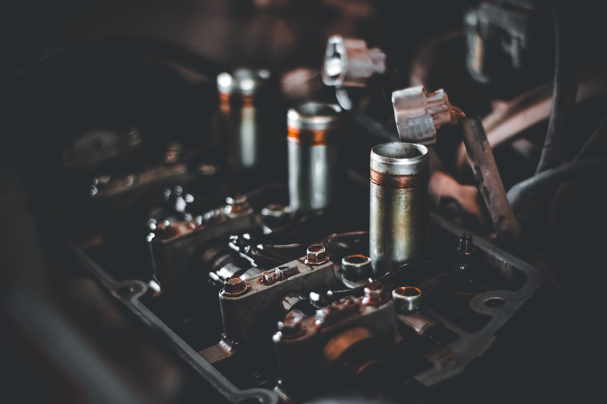
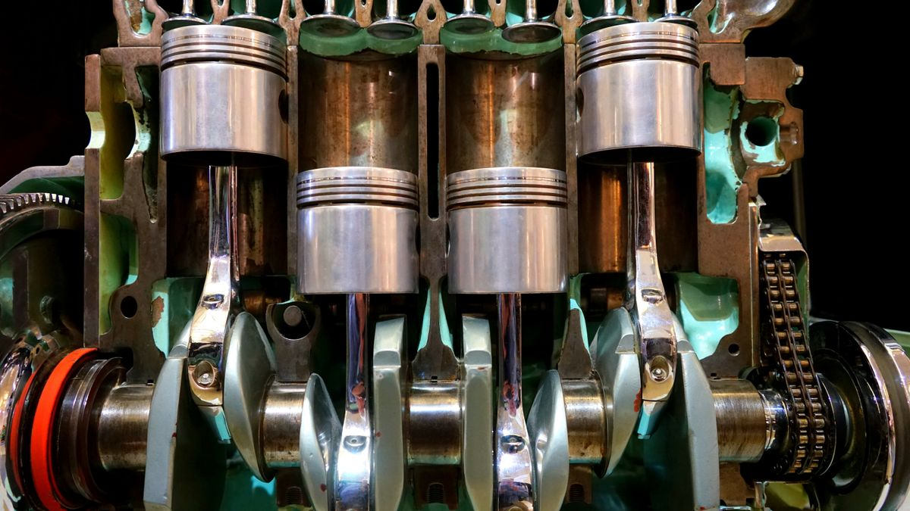
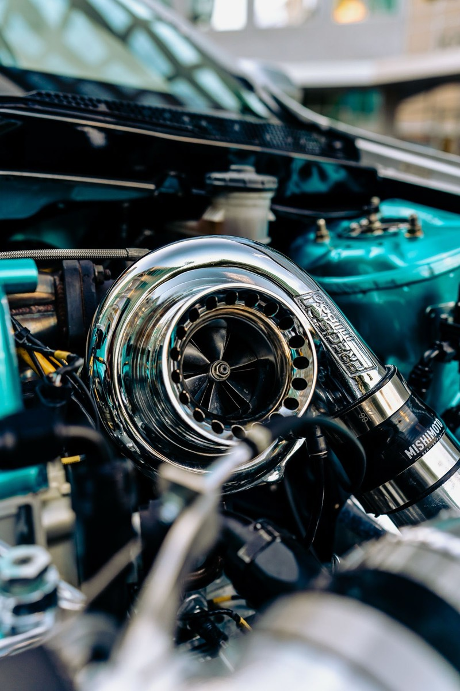

A Third V35A Teardown Found Something New. It Still Isn't the Answer.
A third failed Toyota V35A twin-turbo V6 has been torn down on video, and for the first time the engine did not show the machining debris that the first two had. Instead it showed a warped head, coolant intrusion at the gaskets, and uneven bearing wear — a different failure signature that raises as
The third V35A teardown found a different failure than the first two. Where those showed machining debris, this one showed a warped head, coolant intrusion at the gaskets and uneven bearing wear — so the engine has more than one way to fail.
It is also the second teardown of an engine that was already a replacement for a failed one, which is the detail that matters if you are weighing whether the campaign remedy actually fixes the problem.

A third failed Toyota V35A twin-turbo V6 has been torn down on video, and for the first time the engine did not show the machining debris that the first two had. Instead it showed a warped head, coolant intrusion at the gaskets, and uneven bearing wear — a different failure signature that raises as many questions as it answers.
The teardown was published by the “I Do Cars” YouTube channel, whose host has been breaking down V35A engines for a year. This is his third, and the second that was a replacement for an already-failed engine.
What the first two found
Both earlier engines showed the same thing: clear damage from debris in the oiling system. By the time the oil pump idler pulley came off the first one, the internal damage was obvious. The second was similar.
That matches the public recall record, which describes manufacturing debris contaminating a main bearing.

What this one found instead
This engine was different from the moment it came apart.
The water pump was full of crust, and the same crust kept appearing as more of the cooling system came off. That points at a cooling problem, not an oiling one.
The cams showed signs of abnormal internal wear, but nothing conclusive. The heads were where it got interesting: several inner bolts resisted, one badly enough to break a socket, and there was evidence of coolant intrusion at the gaskets. A straight-edge measurement then showed a warped head.
After the oil pan came off, there were signs of both debris and coolant in the oil.
And yet — the block came apart to reveal a relatively clean crankshaft. There was abnormal, uneven wear on some crank bearings, but no catastrophic failure.

Why that is more confusing, not less
A warped head and coolant in the oil would normally be the answer. Here it might be a symptom rather than a cause, and that distinction matters.
The host’s own read is that the engine may still be carrying whatever defect is killing these V6s, and that it simply had not manifested yet when the engine stopped running. A borescope showed far cleaner oiling passages than the previous engine — no large machining burrs.
Then comes the detail that complicates the timeline. This engine came out of a 2025. The previous one, which failed catastrophically, came out of a 2026 and had visible machining debris. A later model year showing the debris and an earlier one not showing it is the opposite of the pattern you would expect if the problem were being progressively fixed.
What this does and does not tell you
It does not identify the root cause. It does not tell you your engine is safe or unsafe. One teardown of a failed engine is a data point, not a rate.
What it does is widen the set of ways these engines fail. Debris in the oiling system is the mechanism named in the recalls. This engine did not obviously fail that way, which means either the debris theory is incomplete, or this engine failed for a second, unrelated reason.
The host says he has two more locked-up V35As coming in and is looking to bring in an outside expert on Toyota’s V6.
Where this sits against the recall record
There are three NHTSA campaigns on this engine, each expanding the last:
| Campaign | Filed | Vehicles |
|---|---|---|
| 24V381 | May 30, 2024 | 2022-2023 Tundra, Lexus LX600 |
| 25V767 | Nov 6, 2025 | 2022-2024 Tundra, Lexus LX, 2024 Lexus GX |
| 26V320 | May 20, 2026 | 2024 Tundra |
All three describe manufacturing debris contaminating a main bearing, causing an engine stall and loss of drive power. The remedies evolved: 24V381 replaced the engine assembly outright, while 25V767 and 26V320 moved to an inspection of the
1 main bearing using vehicle inspection software and drive data, replacing the
engine only if that inspection says so.
26V320 is still waiting on a final remedy. Interim letters went out July 23, 2026, with more to follow once one exists.
The reason the campaigns matter to a teardown video is that they define what counts as a known failure. An engine that fails in a way the campaigns do not describe is either a different problem or a gap in the described problem. Either answer is more useful to an owner than a single anecdote, and neither is available yet.
Worth noting too: the campaigns expanding rather than closing is itself a signal. 24V381 covered two model years and one Lexus. 25V767 added a third model year, a second Lexus and the GX. Each expansion moved the boundary outward, which is what happens when a defect turns out to be less contained than the first filing estimated.
What to do with this
If you own a V35A, the teardown does not change what you should do, because there was nothing to do differently. Check your VIN against NHTSA’s recall lookup, and if you are covered by 25V767 or 26V320, get the inspection.
What it does change is how much confidence to place in the inspection as a complete answer. If a warped head and coolant intrusion can bring one of these engines down without debris being present, then a clean main-bearing inspection is reassuring about the bearing and silent about everything else.
That is worth knowing before you read an inspection result as “the engine is fine.”
What we could not verify
We did not see this engine. Everything above is from the published teardown video as reported by The Drive, and from NHTSA’s public campaign records.
We could not verify the vehicle history of this specific engine — whether it had already been replaced under a campaign, what mileage it failed at, or how it was maintained. The model-year detail (2025 for this engine, 2026 for the previous one) is as stated in the coverage.
We also could not confirm any manufacturing change at Toyota that would explain the difference between the two, and Toyota has not commented on the teardown.
Sources: The Drive, “This Blown Toyota V6 May Hold the Secret to the Tundra’s Engine Failures,” reporting on the “I Do Cars” teardown, November 2026; NHTSA recall API for campaigns 24V381, 25V767 and 26V320, queried November 14, 2026.
CarModReview may earn a commission from purchases made through links on this page, at no extra cost to you.
Topics
- Tuning